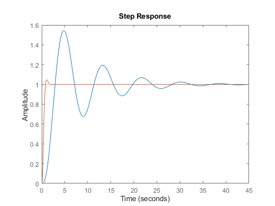

Contents
Limpa Workspace
clear;
clc;
Prática
A = [
0 1 0;
0 0 1;
0 -1 -2
]
B = [0; 0; 1];
C = [1 0 0 ];
D = [0];
UP = 0.05;
Tp = 1;
e = 0;
Gs = ss(A,B,C,D);
zeta = -log(UP)/sqrt(pi()^2 + log(UP)^2);
wn = pi() / (Tp * sqrt(1-zeta^2));
sd1 = -zeta*wn+j*wn*sqrt(1-zeta^2);
sd2 = -zeta*wn-j*wn*sqrt(1-zeta^2);
sd3 = -5*zeta*wn;
sd = [sd1 sd2 sd3]
Ab = [ A, zeros(length(A),1); -C, 0];
Bb = [B; 0];
kb = place(A,B,sd);
ks = [kb(1), kb(2), kb(3)]
Gc = ss(A-B * ks, B, C, D);
Kd = 1/dcgain(Gc);
Gcs = ss(A-B * ks, B * Kd, C, D);
Gfs = feedback(Gs,1);
step(Gfs,Gcs);
disp(stepinfo(Gcs));
I = [ 1 0 0; 0 1 0; 0 0 1];
A =
0 1 0
0 0 1
0 -1 -2
sd =
-2.9957 + 3.1416i -2.9957 - 3.1416i -14.9787 + 0.0000i
ks =
282.2581 107.5881 18.9701
RiseTime: 0.5061
TransientTime: 1.4503
SettlingTime: 1.4503
SettlingMin: 0.9014
SettlingMax: 1.0473
Overshoot: 4.7330
Undershoot: 0
Peak: 1.0473
PeakTime: 1.0761
